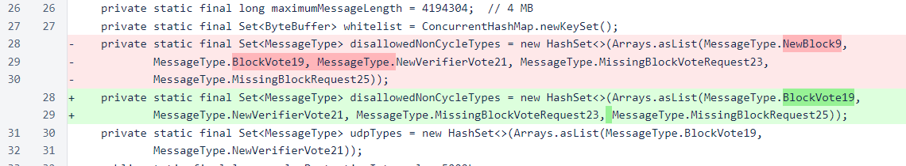
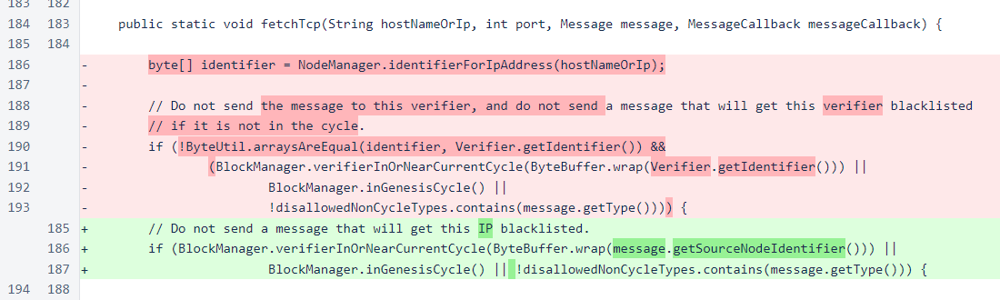
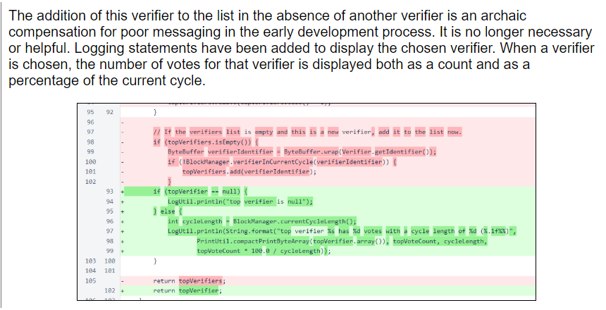

Nyzo version 544 (commit on GitHub) corrects an issue that was causing the sentinel to fail.
This version affects primarily the sentinel. The change, however, involves a core part of the messaging code.
The problem that caused sentinels to fail was simple. In order to avoid blacklisting, many sentinels on 541 or later were not transmitting blocks. The errant code was introduced in version 476, but it did not cause improper behavior until version 541.
In Message, message type NewBlock9 has been removed from the list of disallowed non-cycle types. In version 531, this message type was removed from blacklisting. Enough of the cycle has updated to version 531 or later that blacklisting by the remaining verifiers is much less of a concern than a failure to transmit blocks would be.
While this change is a fix for the transmission problem, the previous code was correct, and it was not the source of the problem.
The actual bug was in the verifierInOrNearCurrentCycle() method call. Instead of checking the sender of the message, the verifier identifier was checked. This meant that a message signed by an in-cycle verifier would be withheld if the verifier identifier was not also in-cycle. Unfortunately, in our sentinel testing for version 541, the verifier identifier on the test system was in-cycle, so this issue was not detected in pre-release testing.
Additionally, the check to avoid sending a message to a verifier with the same identifier as this one has been removed. It was an unnecessary optimization that could interfere with potentially useful communication.
Prior to 541, blocks were transmitted by most sentinels due to a quirk in the code that caused all sentinels to recognize themselves as being near the current cycle. The change in 541 that removed this quirk and caused the sentinel to fail was presented as follows in the version 541 release notes.
